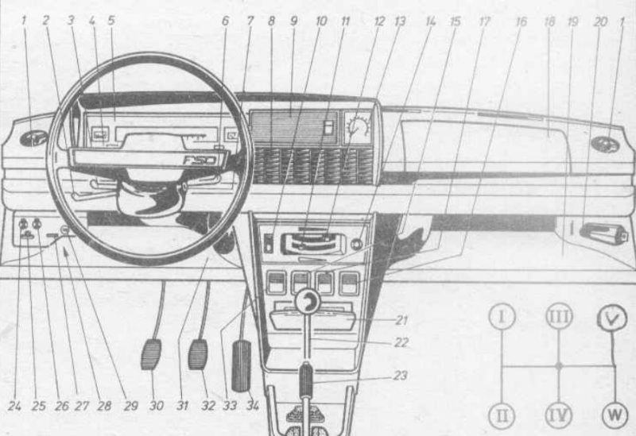
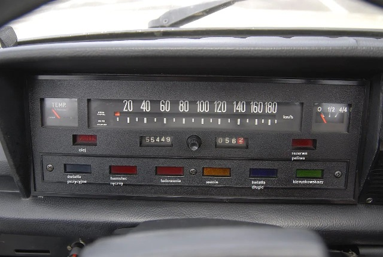

Polski Fiat 125p
Deska rozdzielcza w samochodzie Polski Fiat 125p, urządzenia sterowania i kontroli (na podst. Budowa, eksploatacja i naprawa - Polski Fiat 125p, wyd. 1982)
Deska rozdzielcza w samochodzie Polski Fiat 125p, widok kontrolek
| Lp | Nazwa |
|---|---|
| 1 | Nawiew nastawny |
| 2 | Dźwignia przełącznika świateł reflektorów |
| 3 | Dźwignia przełącznika kierunkowskazów |
| 4 | Przycisk sygnału dźwiękowego |
| 5 | Zestaw wskaźników |
| 6 | Dźwignia włączania wycieraczki i spryskiwacza |
| 7 | Wyłącznik zapłonu z urządzeniem zabezpieczającym przed kradzieżą |
| 8 | Osłona miejsca na głośnik |
| 9 | Osłona miejsca na radioodbiornik |
| 10 | Włącznik dmuchawy |
| 11 | Dźwignia sterowania dopływem gorącego powietrza |
| 12 | Dźwignia sterowania dopływem zimnego powietrza |
| 13 | Obrotomierz silnika |
| 14 | Zapalniczka |
| 15 | Włącznik wycieraczki i spryskiwacza szyby tylnej samochodu Kombi |
| 16 | Włącznik ogrzewania tylnej szyby |
| 17 | Miejsce na włącznik świateł awaryjnych |
| 18 | Pokrywa schowka |
| 19 | Półka prawa |
| 20 | Skrzynka bezpieczników |
| 21 | Popielniczka |
| 22 | Dźwignia zmiany biegów |
| 23 | Dźwignia hamulca postojowego |
| 24 | Gałka ręcznego sterowania przepustnicą gaźnika |
| 25 | Uchwyt zwalniania zamka pokrywy silnika |
| 26 | Gałka włączania urządzenia rozruchowego |
| 27 | Przełącznik regulatora pracy wycieraczki |
| 28 | Gniazdo wtykowe lampy przenośnej |
| 29 | Otwór dodatkowego przełącznika lub urządzenia |
| 30 | Pedał sprzęgła |
| 31 | Półka lewa |
| 32 | Pedał hamulca |
| 33 | Włącznik oświetlenia zewnętrznego i wskaźników |
| 34 | Pedał przyspieszenia |